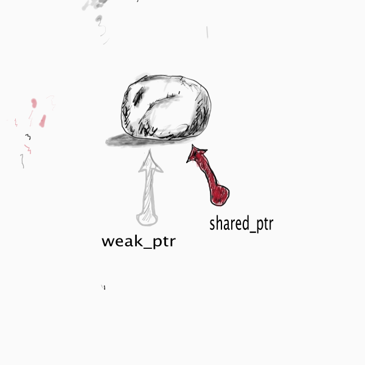

void testRefCount(){
shared_ptr<Node> pt0(new Node(1));
shared_ptr<Node> pt1 = pt0;
shared_ptr<Node> pt2 = pt0;
printf("count=[%ld]\n", pt0.use_count()); // 3
pt1.reset();
printf("count=[%ld]\n", pt0.use_count()); // 2
pt2.reset();
printf("count=[%ld]\n", pt0.use_count()); // 1
pt0.reset();
printf("count=[%ld]\n", pt0.use_count()); // 0
}
class Class2;
class Class1{
public:
shared_ptr<Class2> c2;
//weak_ptr<Class2> c2;
public:
~Class1(){
printf("Destroy Class1()\n");
}
};
class Class2{
public:
shared_ptr<Class1> c1;
public:
~Class2(){
printf("Destroy Class2()\n");
}
};
void cycle(){
auto c1 = make_shared<Class1>();
auto c2 = make_shared<Class2>();
c1->c2 = c2;
c2->c1 = c1;
}
class Class2;
class Class1{
public:
//shared_ptr<Class2> c2;
weak_ptr<Class2> c2;
public:
~Class1(){
printf("Destroy Class1()\n");
}
};
class Class2{
public:
shared_ptr<Class1> c1;
public:
~Class2(){
printf("Destroy Class2()\n");
}
};
void cycle(){
auto c1 = make_shared<Class1>();
auto c2 = make_shared<Class2>();
c1->c2 = c2;
c2->c1 = c1;
}
Node* bad_idea(){
return new Node(1);
}
shared_ptr<Node> good_idea(){
shared_ptr<Node> pt(new Node(1));
return pt;
}
void uniqueTransferOwnerShip(){
unique_ptr<Node> upt(new Node(1));
// error
// unique_ptr<Node> upt1 = upt;
// error
// unique_ptr<Node> upt2(upt);
unique_ptr<Node> upt3 = std::move(upt);
}
int* pt1 = new int(10);
int* pt2 = pt1;
delete pt1;
// pt2 is danging pointer
// how to use weak pointer to solve it
shared_ptr spt1;
spt1.reset(new int(100));
weak_ptr wptr = spt1;
if(auto tmp = wptr.lock())
cout<<"wptr is not expired yet"<
